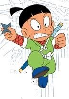

Kemuzou Kemumaki is a Koga Ninja and the main antagonist of Ninja Hattori-kun. He lives in a block of flats with his cat Kagechiyo, and happens to be the opposite of Kenichi Mitsuba. He loves Yumeko, but the reason he dislikes Kenichi is because he loves her too. However, he is scared of some of Hattori's ninja techniques, and can easily be intimidated by him. Kemumaki comes from the Koga clan, and the Iga and Koga clan are sworn enemies. He does have a soft side though.
| Kemuzou Kemumaki | |
|---|---|
|  | |
| Occupation:Student | |
| Gender:Male |
Duelling: Kemumaki is a skilled duellist and constantly duels with Hattori, with his cat Kagechiyo as his combatant. Disguise: Kemumaki is known for disguising as people to cause trouble, paticularly Hattori, Kenichi or Yumeko. He even posed as Kenichi's older brother once. Ninja Techniques: Kemumaki is skilled at performing ninja techniques, but performs them to cause trouble, because he is a ruthless Koga Ninja.